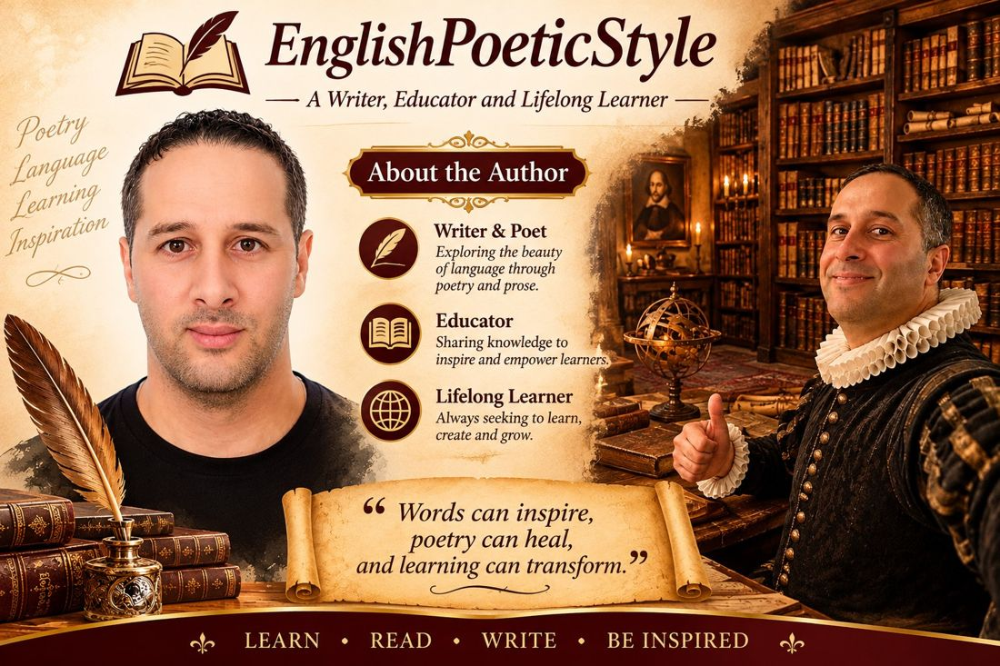

مرحباً بك
في هذا الموقع نتعلم اللغة الإنجليزية من خلال الشعر، فالقصيدة تجمع بين المفردات والإيقاع والمعنى، وتجعل الحفظ أسهل والفهم أعمق.
Welcome to a creative journey through English, poetry, sentences, and storytelling. Work through the sections in order, or jump to whichever one you need.
Sentence Play
Use rhyming words to make a line easy to remember.
Estimated time: 10 minutesModel
"I packed a small blue kite / and watched it lift in light."
Activity
Choose day/way, rain/train, light/flight, or book/look. Write two connected lines using both words.
Support: "I ___ today / because ___ came my way."
Challenge: Write four AABB lines, then rewrite them without rhyme and compare.
Word pairs to try
habit – street · museum – stadium · game – name · cars – stars
Example
I like to ride in cars,
And look up at the stars.
Your Workspace
Poetry
Twinkle, twinkle, little star,
How I wonder what you are.
Read the poem aloud. Identify familiar words and discover the meaning of new words.
Rhyme family: "-ake"
Peace and love, don't make a mistake,
Take a deep breath, press the brake.
Come inside and share some cake,
We're here for joy, not hearts to break.
Find the rhyming pairs. Which words sound the same at the end? Can you write a fifth line that keeps the rhyme?
Reader Response
Read a poem and express your thoughts. There is no wrong answer, as long as you explain your reason clearly.
What is the main idea? Which words do you like? How does the poem make you feel?
Try these sentence starters: "I think this poem is about…", "I like the line… because…", "This reminds me of…"
Poetry & Prose
Poetry uses rhythm, imagery, and carefully chosen words. Prose uses ordinary sentences to communicate ideas and stories.
Activity: Write one idea first as a short poem, then rewrite it as a paragraph.
Vocabulary to practice: distraction, instruction, introduction, production, reconstruction.
Story Lab
Create a short story using imagination and descriptive language. A strong short story has five parts: characters, setting, plot, conflict, and theme.
Start with: "One morning, I discovered a mysterious letter…"
Reflect
Think about what you have learned.
What did you enjoy? What was difficult? What would you like to improve?
Book

The Poetic Style Writing Project
A Path to Creative Expression in English
A creative and practical guide for learners who want to write English with confidence. It covers crafting rhyming sentences, composing poetry, expressing opinions, bridging poetry and prose, and building a complete short story.
- Author: Noureddine Bouzaher
- First published: 2025
- ISBN: 978-9931-788-102